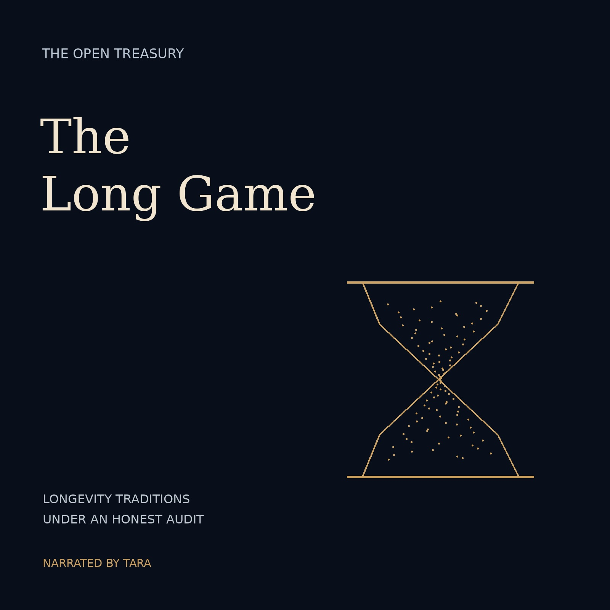

The Long Game
Longevity traditions under an honest audit.
Purpose and mortality, Tibetan long-life deities, Xu Yun, Chinese life-nourishing arts, the Daoist immortals and the Buddha's final invitation. The course separates traditional promises, historical biography, observational associations and clinical evidence.
Xu Yun's traditional age of 119 remains unverified. Saul Justin Newman's interview presents an argument, not a settled demolition of every Blue Zone or every validated age. The garbled practice name and unnamed Indian-teacher story remain unidentified. The Buddhist kappa passage is disputed as eon vs full lifespan. No longevity guarantee, medical regimen, wildlife-release plan or restricted initiation is provided.
Chapters
- 00:00 - The Long Game
- 02:15 - What the Data Actually Says
- 04:48 - The Blue Zones, Audited
- 09:34 - The Three Who Hold the Vase
- 15:50 - The God Who Had Seven Days
- 18:36 - The Deathless Lady's Heart-Essence
- 21:13 - Empty Cloud and the Honest Audit
- 25:25 - The Chinese Laboratory
- 29:42 - The Immortals
- 34:30 - The Fast Burners
- 36:30 - The Mantra With the Garbled Name
- 39:13 - What Actually Keeps You Alive
- 42:06 - The Deathless
Sources and complete script
Source, rights and audio notes
Complete spoken script
Rights and narration
Original commentary with short credited translation excerpts. Third-party rights remain separate. No blanket CC0 claim applies to this combined episode. No source scans, music or filmed ritual are included.
AI narration in Aoede; specialist pronunciation approximate. Full automated wording comparison and targeted checks, not a full human-ear certification. Gain and transparent true-peak limiting only, no speed, pitch or EQ change. Listening MP3: 128 kbps mono, -17.9 LUFS, -1.9 dB true peak.
Free listening without ads, paid access, sponsorship or support solicitation.